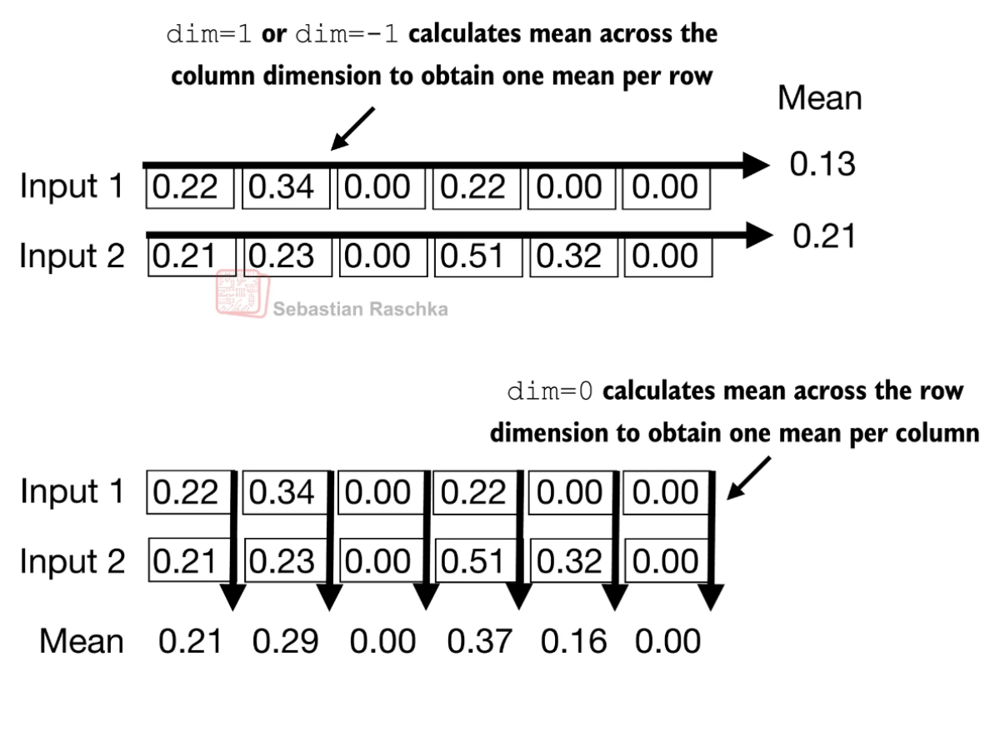
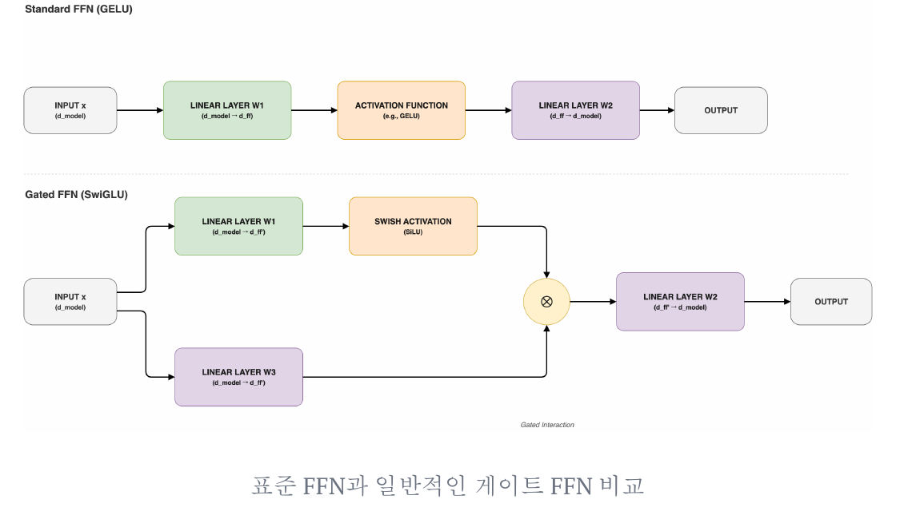
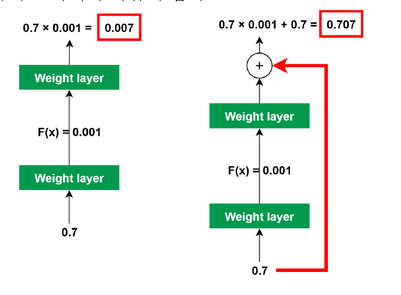

11. 정규화·FFN과 잔차 — 문맥을 섞고 특징을 가공하는 블록
GPT 블록은 Attention으로 위치 사이의 정보를 섞고, FFN으로 각 위치의 특징을 가공한다. 정규화와 잔차 연결은 이 연산을 깊게 쌓을 때 학습을 돕는다. 이름을 외우기보다 어떤 값이 보존되고 어떤 값이 바뀌는지 추적하자.
필요한 배경은 토큰별 벡터와 행렬곱, causal Attention이다. Attention이 낯설면 09장 Attention 설명으로 돌아간다. 이 장을 마치면 정규화의 축을 계산하고, 두 잔차 경로의 입력을 구별하며, 기본 FFN과 게이트 FFN을 비교할 수 있어야 한다. 기본 학습은 1~4절, 다른 분야 응용은 보충이다.
시각적으로 확인할 핵심
순서: X → 첫 분기 → U → 둘째 분기 → Y. 두 덧셈의 기준을 찾으세요.
![두 잔차는 서로 다른 입력을 보존한다: X · [B,T,C] 첫 잔차의 기준; Norm → Attention 위치 사이 정보를 섞음; U = X + Attention 결과 두 번째 잔차의 기준; Norm → FFN 위치별 특징 가공; Y = U + FFN 결과 폭 C를 보존](../resources/3bd9483d7403acd8038e-07_%ED%95%B5%EC%8B%AC%EA%B4%80%EA%B3%84.svg)
두 번째 잔차가 보존하는 값은 X가 아니라 U다. 모든 단계의 외부 폭은 C다.
1. 두 번 더하는 이유
설명용 Pre-Norm 블록은 다음처럼 계산한다. X는 [B,T,C], B는 문장 수, T는 위치 수, C는 토큰 표현의 폭이다.
U = X + Dropout(Attention(LayerNorm1(X)))
Y = U + Dropout(FFN(LayerNorm2(U)))
Attention은 각 위치가 읽을 문맥 정보를 만들고, FFN은 그 정보를 특징별로 변환한다. 잔차 연결은 분기 입력을 출력에 그대로 더하는 경로다. FFN 앞 잔차는 이미 Attention 결과를 더한 U를 보존한다. 두 번째에도 X를 더하면 위 식과 다른 모델이 된다. 덧셈하려면 분기 출력의 폭도 C여야 한다. 변화량을 학습한다는 해석은 유용하지만 변화가 항상 작다는 수학적 보장은 없다.
2. LayerNorm: 한 토큰의 C개 특징을 정리한다
LayerNorm은 한 토큰 벡터 안에서 평균과 분산을 계산한다. 배치나 시간 위치를 함께 평균내지 않는다. 각 특징의 정규화 값에 학습 가능한 scale γ와 shift β를 적용한다.
설명용 입력 x=(1,3), γ=(1,1), β=(0,0), ε는 무시할 만큼 작다고 놓자. 평균은 2, 편차는 (-1,1), 분산은 (1+1)/2=1, 표준편차는 1이므로 출력은 약 (-1,1)이다. γ=(2,1), β=(0,3)이면 (-2,4)로 바뀐다. 따라서 최종 출력이 항상 평균 0, 분산 1인 것은 아니다. ε는 상수 벡터처럼 분산 0일 때도 나눗셈을 가능하게 한다. 교안 129쪽의 ‘분산을 나눔’은 분산에 ε를 더한 값의 제곱근으로 나눔으로 읽어야 한다. Layer Normalization 원논문
RMSNorm은 평균을 빼지 않고 sqrt(mean(x²)+ε)로 나눈 뒤 scale을 곱한다. 같은 (1,3)의 RMS는 √5≈2.236, scale=1 출력은 약 (0.447,1.342)이다. 평균 0을 강제하지 않는다. BatchNorm은 배치 등의 축에서 통계를 얻으므로 ‘정규화’라는 공통 이름만으로 서로 교체해서 설명할 수 없다. RMSNorm 원논문
3. FFN과 활성화: 선형층 사이에서 무엇이 달라지나
기본 FFN은 각 위치에 같은 가중치를 적용한다. C → 4C → C에서 내부 폭을 늘리고 GELU 같은 비선형 함수를 통과시킨다. 위치마다 별도로 계산하므로 FFN 자체가 다른 위치의 값을 직접 읽지는 않는다. 비선형 함수가 없으면 두 선형변환은 하나의 선형변환으로 합칠 수 있어 표현에 제약이 생긴다.
| 함수 | 계산·특징 | 주의점 |
|---|---|---|
| Sigmoid | 1/(1+exp(-x)), 출력 0~1 |
큰 절댓값에서 기울기가 작아질 수 있음 |
| ReLU | max(0,x) |
음수 구간 기울기 0, 일부 뉴런이 계속 비활성화될 수 있음 |
| GELU | x Φ(x), Φ는 표준정규 누적분포 |
음수를 전부 0으로 만들지는 않음 |
| Swish/SiLU | β=1이면 x sigmoid(x) |
자기 값으로 통과량을 조절하는 부드러운 함수 |
GLU는 입력으로부터 값 경로 v와 게이트 경로 g를 별도로 투영하고 sigmoid(g) ⊙ v를 계산한다. ⊙는 같은 위치 원소끼리의 곱이다. 예를 들어 g=(0,0), v=(2,-4)이면 게이트=(0.5,0.5), 결과=(1,-2)다. SwiGLU는 게이트 함수를 SiLU로 바꾼다. 출력 투영을 포함하면 down(SiLU(g) ⊙ v)이며 마지막 폭은 다시 C다. SiLU 게이트는 sigmoid 자체와 달리 값이 0~1에 갇히지 않는다. FFN 확장 폭과 게이트 채택 여부는 모델 설계에 따라 다르다.
4. Dropout은 학습과 평가에서 다르다
Dropout은 학습 중 일부 활성값을 확률 p로 0으로 만든다. inverted dropout에서는 살아남은 값에 1/(1-p)를 곱해 기댓값을 맞춘다. 입력 (2,4), p=0.5에서 첫 값만 살아남은 한 사례는 (4,0)이다. 평가 때는 보통 항등연산이다. Attention 확률 뒤에 적용할 수도 있지만 그 위치로만 제한되지 않는다. 확률 뒤 Dropout을 통과한 한 번의 표본은 행합 1을 보장하지 않는다. 사용 여부와 비율은 학습 조건에 따른 선택이므로 교안 127쪽의 사용 빈도를 모든 LLM의 규칙으로 확대하지 않는다.
5. 보충: Transformer가 다른 분야로 넘어갈 때
| 예 | 토큰 또는 표현 | 이 교안에서 볼 공통점 |
|---|---|---|
| ViT | 이미지 패치 | 패치 사이 관계를 Attention으로 처리 |
| Whisper | 음성 표현과 텍스트 | Encoder가 음성을 읽고 Decoder가 텍스트 생성 |
| AlphaFold | 단백질 관련 표현 | 잔기 사이 관계를 모델링하는 구성요소 활용 |
| 시계열 | 연속값 패치 또는 이산 구간 | 시간적 관계를 표현하고 예측 |
모든 시계열 모델이 반드시 실수를 토큰 ID로 양자화하는 것은 아니다. ‘관계를 학습한다’는 공통 원리와 실제 입력·목표·구조의 차이를 함께 보자.
6. 이해 확인
[2,5,12]에서 일반적인 LayerNorm은 어느 축으로 평균을 내는가?- 두 번째 잔차에 X를 더하면 왜 기본 식과 다른가?
- C=12일 때 기본 FFN의 중간 폭과 최종 폭은? 게이트가 0.5, 값이 -6이면 GLU 결과는?
- x=(4,4)를 LayerNorm에 넣으면 ε가 왜 필요한가? 평가 시 Dropout의 출력은?
해설과 돌아갈 위치
- 마지막 12개 특징 축이다. 문장·위치는 각각 독립적으로 정규화한다. 2절로 돌아간다.
- U에는 Attention 수정분이 이미 포함되어 있다. X를 쓰면 그 상태의 보존 경로가 달라진다. 1절의 두 식을 다시 쓴다.
- 48과 12,
0.5×(-6)=-3. 3절의 경로를 확인한다. - 분산 0으로 나누는 것을 막는다. scale/shift 전 정규화 값은 0이다. 평가 Dropout은 입력을 그대로 돌려준다. 2·4절로 돌아간다.
다음 12장에서는 이 블록을 거친 벡터가 어휘 점수로 변하는 마지막 단계를 연결한다.
7. 원문 정규화 그림의 축과 통계 검산
128쪽의 종 모양 곡선은 스케일을 맞춘다는 직관이다. 평균과 분산을 정규화한다고 임의의 입력 분포가 정규분포가 되지는 않는다. 129쪽 식에 μ_B라는 첨자가 있어도 이 장의 LayerNorm 통계는 한 토큰의 특징 축에서 구한다. B라는 글자만 보고 batch 평균이라고 읽지 않는다. 분산의 분모는 C이고 표본분산의 C−1이 아니다.
130쪽의 화살표가 한 행 전체를 가로지르는지, 같은 열의 여러 행을 가로지르는지 본다.

입력 행은 (0.22,0.34,0,0.22,0,0)과 (0.21,0.23,0,0.51,0.32,0)다. 행 평균은 각각 0.78/6=0.13, 1.27/6≈0.211667이다. 열 평균은 (0.215,0.285,0,0.365,0.16,0)이다. 원문 표시 소수 둘째 자리만 재평균하면 반올림 차이가 생길 수 있으므로 위 원값을 쓴다. 실제 [B,T,C]에서 LayerNorm(C)은 마지막 축 C만 사용한다. 그림의 두 행이 batch인지 token인지 먼저 정의해야 BatchNorm과의 정확한 대응을 말할 수 있다.
131쪽 RMSNorm은 r=√(Σx_i²/C+ε), y_i=γ_i x_i/r이다. 보충: 평균을 빼지 않는 것과 제곱평균 계산을 없애는 것은 다르다. (1,3)은 LayerNorm 약 (-1,1), RMSNorm 약 (0.447214,1.341641)이다(γ=1,β=0,ε≈0). (4,4)의 LayerNorm은 (0,0)이고 RMSNorm은 약 (1,1)이므로 두 방법이 버리는 정보가 다르다. 속도나 품질 우열은 설정에 따라 측정해야 한다. RMSNorm 원논문
8. 활성화에서 게이트 FFN까지 손계산
132쪽의 ‘지식의 저장소’는 FFN 가중치가 학습된 변환을 담는다는 비유다. Attention 가중치·임베딩 등도 학습되므로 모든 지식이 FFN에만 저장된다고 단정하지 않는다. 입력은 현재 문맥 표현, 출력은 같은 위치의 새 특징이다. 다음 교육용 FFN은 다른 토큰을 읽지 않고도 비선형 결과를 만든다.
x=(1,-1)
W1=[[1,0,1],[0,1,-1]], b1=0
xW1=(1,-1,2)
ReLU(xW1)=(1,0,2)
W2=[[1,0],[0,1],[1,1]], b2=0
FFN(x)=(3,2)
폭은 2→3→2다. 4배 확장은 흔한 기본 설정이지 FFN의 정의가 아니다. 입력 위치마다 같은 W1,W2를 적용하며, 이 예제에 잔차까지 더하면 (4,1)이다. FFN 출력과 블록 출력을 혼동하지 않는다.
133쪽 sigmoid는 양 끝에서 곡선이 평평하다. 도함수 σ(x)(1−σ(x))는 최대 0.25이며 작은 기울기의 반복 곱은 역전파를 약하게 만들 수 있다. 가중치와 잔차 등 전체 경로도 영향을 준다. 134쪽 ReLU의 음수 부분은 0이고 양수에서는 기울기 1이다. 음수 입력 하나가 나왔다고 그 뉴런이 영원히 죽었다고 판단하지 않는다. 135쪽 GELU는 원점 부근이 매끄럽고 음수 작은 값을 유지한다. 정확한 정의 xΦ(x)와 원문의 tanh 근사식을 구별한다. 예를 들어 x=−1에서 ReLU는 0, GELU는 약 −0.158655다.
136쪽 Swish는 xσ(βx), β=1일 때 SiLU다. x=−1,0,1이면 약 −0.268941,0,0.731059다. 음수 구간의 일부 굴곡 때문에 단조함수가 아니며 양수 출력은 1을 넘을 수 있다. 137쪽 GLU는 따로 학습한 gate와 value를 원소별로 곱한다. gate 입력 0은 sigmoid 후 0.5지만 SiLU 후에는 0이 된다. 따라서 GLU를 SwiGLU로 바꾸는 것은 이름만 바꾸는 일이 아니다.
다음 그림에서 표준 FFN은 한 경로, 게이트 FFN은 두 입력 투영이 곱셈에서 합쳐지는 구조임을 찾는다.

138쪽 코드 up_proj(x).chunk(2,dim=-1)는 합친 투영의 마지막 폭이 2H일 때 각각 H인 gate,value로 나뉜다는 뜻이다. silu(gate)*value의 폭은 H이고 down projection은 C로 되돌린다. gate=(0,1), value=(2,−4)라면 hidden≈(0,−2.924234)다. sigmoid 게이트와 달리 SiLU 게이트의 범위는 0~1로 제한되지 않는다. GLU 변형 원논문 §2
9. 잔차 그림의 산술 정정과 두 통로
139쪽의 붉은 우회선은 입력을 변환 분기 출력에 더하는 경로다. 다음 크롭에는 원문 오류를 그대로 남겼으므로 빨간 숫자를 정답으로 외우지 않는다.

정정: 표시된 연산이 0.7×0.001이면 결과는 0.0007이며, 0.7×0.001+0.7은 0.7007이다. 원문은 각각 0.007,0.707로 써서 소수 자릿수가 한 자리 어긋났다. F(x)=0.001이라는 라벨을 ‘분기 출력 그 자체’로 해석한다면 잔차 결과는 0.701이다. 즉 그림은 배율과 출력 표기도 구별해야 한다. 교재의 예시는 명시된 곱셈 식을 기준으로 정정한다.
오른쪽의 울퉁불퉁한 손실 지형과 매끈한 지형은 특정 시각화 사례다. 모든 모델의 손실면이 잔차 하나로 볼록해진다는 증거가 아니다. 깊다는 이유만으로 변화량이 반드시 작아지는 것도 아니다. 함수 y=x+F(x)의 미분 경로에는 I+J_F가 생겨 항등 경로가 포함되지만 안정성은 전체 구조와 최적화에 달려 있다.
내부 활동: x=(1,2), Attention 분기 출력=(0.5,−0.5), FFN 분기 출력=(1,1)이라고 정한다. 첫 합 U=(1.5,1.5), 둘째 합 Y=U+(1,1)=(2.5,2.5)다. 둘째에도 X를 더해 (2,3)을 얻으면 다른 연산이다. 이 활동은 분기 출력이 주어진 합산 검증이며 LayerNorm까지 실제 학습한 실험은 아니다.
126쪽 원문 블록은 정규화 뒤 Attention, 그 출력에 입력을 더하고, 다시 정규화 뒤 FFN에 이어 두 번째 잔차를 더하는 Pre-Norm 흐름이다. Post-Norm은 예를 들어 LN(X+Attention(X))처럼 덧셈 뒤에 정규화한다. 두 순서는 대수적으로 같지 않으므로 원 Transformer의 Post-Norm과 이 GPT식 도식을 혼합하지 않는다.
10. 응용 그림은 무엇이 토큰이고 무엇이 출력인지 비교한다
140~143쪽은 언어모델 블록 다음에 나온 응용 사례다. 다음 표만으로 입력·관계·목표의 차이를 읽을 수 있다. 실제 응용 모델 전체 학습은 이 장의 범위 밖이다.
| 페이지 | 그림의 입력과 경로 | 출력·학습 목적 | 내부 활동과 예상 결과 |
|---|---|---|---|
| 140 ViT | 이미지를 패치로 분할→평탄화·선형 투영→위치정보와 분류 토큰→Encoder→MLP head | 이미지 클래스 점수 | 32×32 이미지를 16×16 패치로 나누면 4패치, 분류 토큰을 붙이면 길이 5 |
| 141 Whisper | log-Mel 음성 표현→합성곱·Encoder, 텍스트 토큰→Decoder, Encoder에서 Decoder로 cross-attention | 음성에 조건화된 텍스트 토큰 | 음성 길이와 생성 텍스트 길이는 같아야 하는가? 아니며 query와 key의 출처·길이가 다를 수 있음 |
| 142 AlphaFold | 아미노산 서열·유사 서열 정렬(MSA)·쌍 표현·template→Evoformer→구조 모듈, 아래쪽 재순환선 | 단백질 구조 표현 | 잔기 3개라면 순서 있는 잔기쌍 격자는 3×3=9칸. 이는 단어 9개를 생성한다는 뜻이 아님 |
| 143 시계열 | 금융·전력·웹 등 여러 데이터→학습 모델→새 시계열 예측 | 과거 수치에 조건화된 미래 수치 또는 구간 분포 | [0,1),[1,2),[2,3] 구간이면 0.2,1.8,2.5는 ID 0,1,2. 구간 내 정확한 원값은 ID만으로 복구 불가 |
보충과 한계: ViT 패치의 벡터는 텍스트 단어 사전과 다르다. Whisper의 음성 입력이 문자 토큰 그대로라는 뜻도 아니다. AlphaFold 그림은 MSA와 쌍 표현을 갱신하는 별도 구조를 보여 주며 일반 GPT를 그대로 적용한 모델로 읽지 않는다. 시계열의 이산 구간화는 한 접근이며 모든 Transformer 시계열 모델이 이산 ID를 요구하지 않는다. ViT 원논문, Whisper 원논문, AlphaFold 2 공식 구현, Chronos의 시계열 구간화로 개념 범위를 대조했다. 143쪽 그림 자체의 원출처는 표시만으로 특정하지 않는다.
마지막 확인: 정규화를 시간축 T로 하면 미래 토큰의 통계가 현재 표현에 들어갈 수 있다. causal Attention만 올바르게 구현하고 나머지 연산에서 미래를 섞으면 자기회귀 제약이 깨진다. 이 장에서 LayerNorm을 토큰별 특징 축으로, FFN을 위치별로 정의한 이유를 마스크와 함께 설명해 보자. 답: 두 연산이 토큰 사이 정보를 직접 섞지 않도록 하고, 위치 간 전달은 허용된 Attention 경로로 제한한다.
페이지별 상세 대조
핵심 학습은 위 본문으로 완결된다. 아래는 개별 슬라이드의 그림·수치·정정 근거를 찾는 경로다.
- 125쪽: GPT Layer들: 단원 전환
- 126쪽: Decoder-only 블록의 두 잔차
- 127쪽: Dropout과 causal mask는 다르다
- 128쪽: 정규화의 목적과 정규분포의 차이
- 129쪽: LayerNorm 식과 잘못된 분모 문구
- 130쪽: 행 평균과 열 평균: 정규화 축
- 131쪽: RMSNorm은 평균을 빼지 않는다
- 132쪽: FFN은 위치별로 특징을 변환한다
- 133쪽: Sigmoid와 기울기 소실
- 134쪽: ReLU와 비활성 뉴런
- 135쪽: GELU와 ReLU 그래프 비교
- 136쪽: Swish의 self-gating
- 137쪽: GLU: gate와 value의 원소곱
- 138쪽: SwiGLU의 코드와 FFN 폭
- 139쪽: Residual connection의 경로와 산술 오류
- 140쪽: Vision Transformer: 패치가 입력 단위
- 141쪽: Whisper: 음성 Encoder와 텍스트 Decoder
- 142쪽: AlphaFold: MSA와 잔기쌍 표현
- 143쪽: 시계열을 구간 토큰으로 표현하기